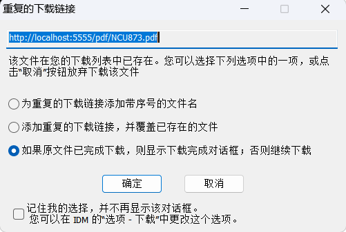
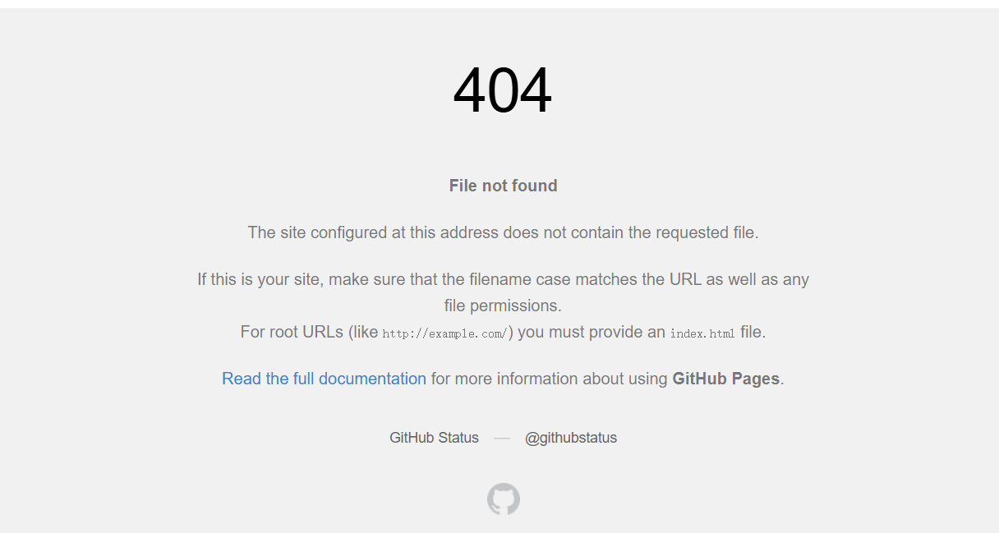
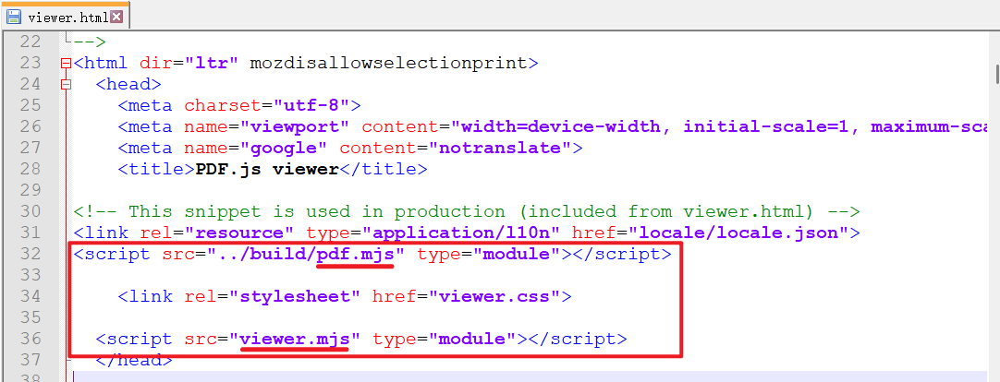
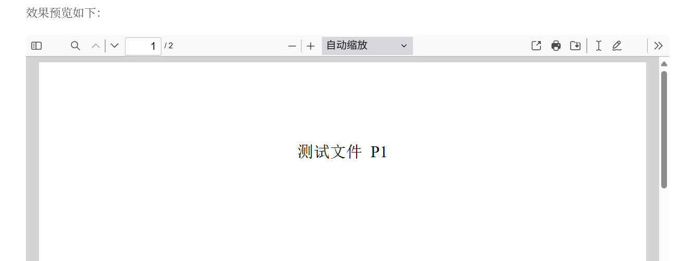

Hexo-Next主题嵌入pdf显示
本文介绍在使用Hexo Next主题搭建个人博客时使用PDF.js工具嵌入显示pdf文件的解决方案，便于进行手机和电脑双端在线浏览。
博文目的
博主在使用Hexo的过程中发现除去可以插入图像文件外，还可以插入pdf文件进行在线预览。类似以下样例，一个网页内插入了一个方框显示pdf内容：
PDF预览(参考资料1)
因此博主预期在Next主题下实现类似功能。
方案验证
hexo-pdf插件
通过搜索其他人搭建个人博客的经验，部分作者使用hexo-pdf插件用于显示pdf文件，尝试该方案。
在博文根目录下安装插件
1
$ npm install --save hexo-pdf
在
source文件夹内创建pdf文件夹，在.md文档内插入以下语句。此方式在本地生成后弹出了IDM文件下载链接，未出现预览窗口，如下图。如果显示
Cannot GET /2025/06/04/Test.pdf说明文件路径有问题1
{% pdf /pdf/Test.pdf %}

弹出下载界面，无预览尝试更改文件夹，在
_post文件夹下创建与.md同名的文件夹 ，在.md文档内插入以下两句语句。1
{% pdf ./Test.pdf %}
1
{% pdf Test.pdf %}
结果与第2步放入
source文件夹类似，本地预览弹出文件下载框，但是无法加载出内容。该方案推送至Github后可正常浏览，效果如下：
缺点：该方案只能在部署到服务器后在PC端预览，手机端查看博文则会显示文件丢失。也无法在本地生成后查看效果。
PDF.js工具
有很多博主在个人博客使用这个pdf工具，但多数应用主题是butterfly或者fluid主题，博主希望尝试应用在next主题上，便于在手机与电脑端实现双端浏览。
下载PDF.js工具包，博主选择下载modern browsers v5.3.31版本
在next主题\source下建立一个文件夹pdfjs，存放解压文件
在博客根目录的
_config.yml文件中设置，取消渲染1
2skip_render:
- pdfjs/**/*使用以下代码插入pdf，其中
src参量的/pdfjs/pdfjs/web/viewer.html为预览窗口，后面紧跟的file=https://MicroPrism.github.io/2025/06/04/Hexo-Next主题嵌入pdf显示/Test.pdf"是Github上的文件路径。1
2
3
4
5
6<iframe
src="/pdfjs/pdfjs/web/viewer.html?file=https://MicroPrism.github.io/2025/06/04/Hexo-Next主题嵌入pdf显示/Test.pdf"
width="100%"
height="750"
frameborder="0">
</iframe>此种方式部署到Github之后出现跨域导致文件无法加载，如下图，而浏览器直接输入上方代码的https链接是可以打开访问的。原因是网页和文件不在同一项目。

文件跨域报错查看
viewer.html源码，能看到PDF.js工具在4.0版本开始后引用了pdf.mjs和viewer.mjs两个资源文件，如下图：
viewer.html资源引用在此之前则是使用的
.js文件。本文使用v3.11.174版本，打开web/viewer.js第3224行并注释以下三行1
2
3//if (fileOrigin !== viewerOrigin) {
// throw new Error("file origin does not match viewer's");
//}
viewer.html资源引用效果预览如下：
参考资料
- hexo 中如何插入pdf | 智贤
- hexo中插入PDF |知乎
- The Details Usage of the Hexo Next-Theme Plugin
next-pdf| Poetry Continent - hexo博客显示pdf | robot-x Blog
- Hexo内嵌PDF.js | 哔哩哔哩
- pdf.js｜CSDN博客
--------------------------- End ---------------------------
有情芍药含春泪，无力蔷薇卧晓枝。– 春日